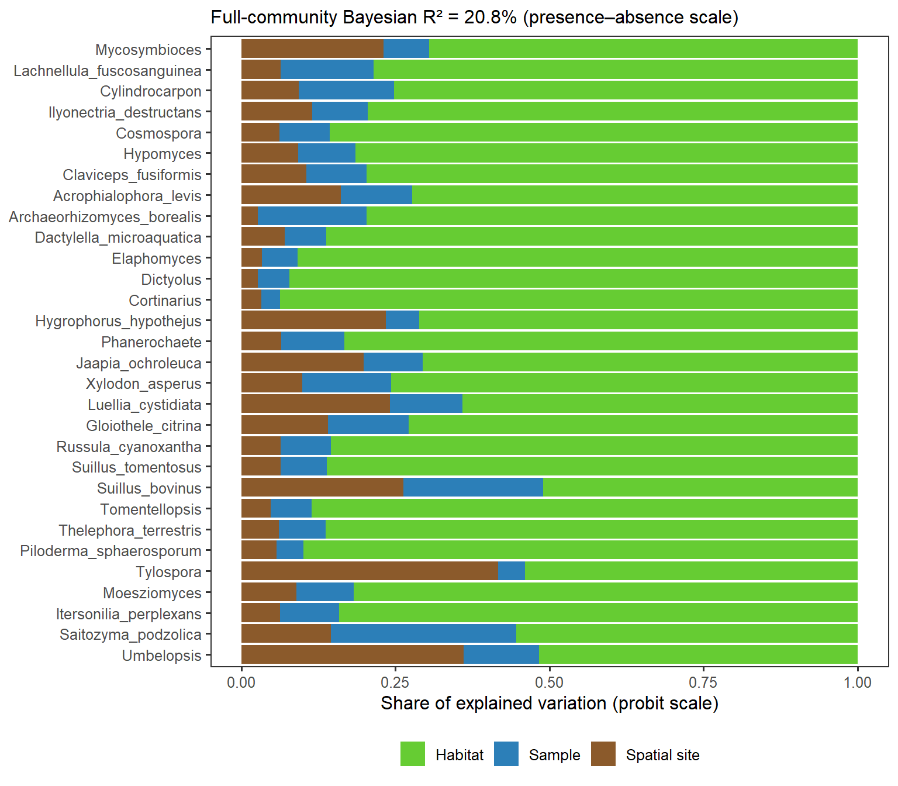
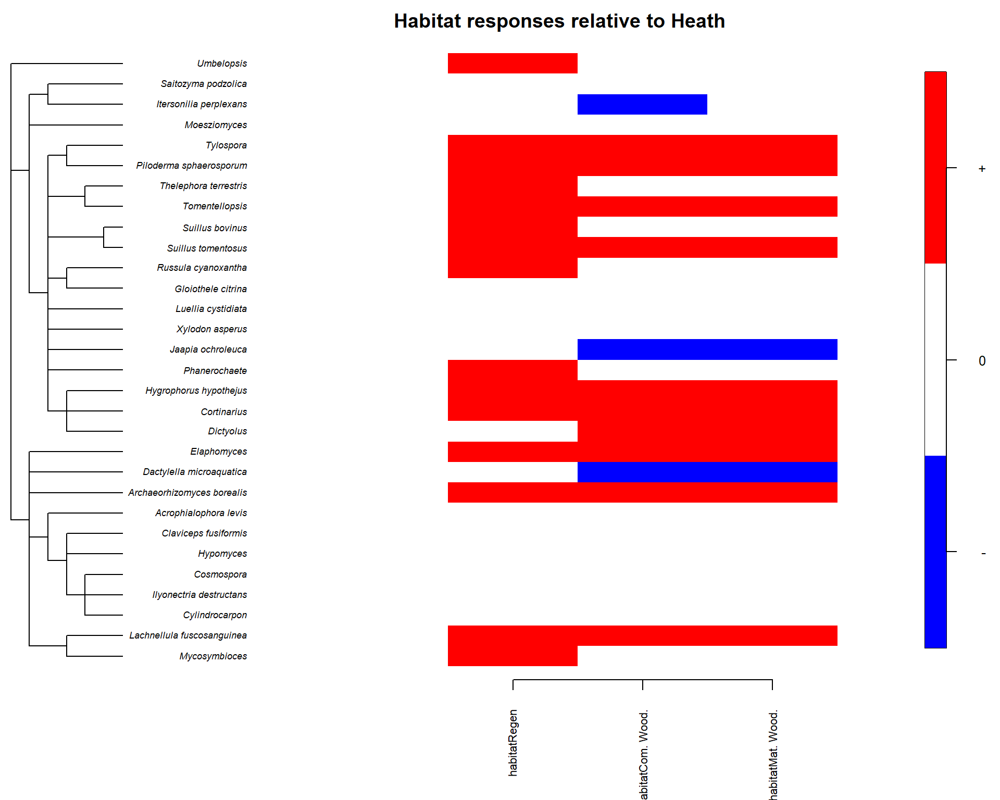
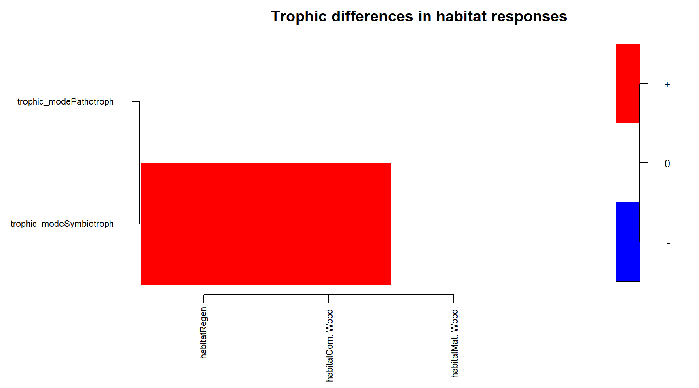
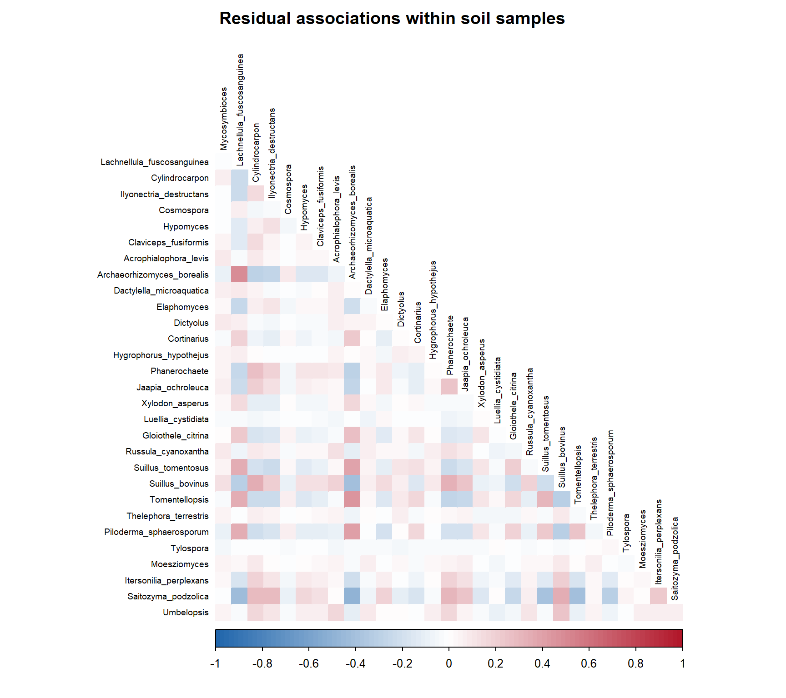

What we will cover in this session
In Session 2, we used multivariate
analysis methods that rely on ordination to explain changes at the
community level. Ordination-based methods are straight forward to use,
and provide valuable visual summaries. However, they are restricted to
the layers of data that they can handle, typically community data, and
environmental metadata, and explanatory power is usually small, in our
case never exceeds 30%.
There are other multivariate methods that do not rely on ordination.
Joint Species Distribution Models (jSDMs) are one of such methods. We
will not go into the theory behind such models, it is worth noting that
they are essentially extensions of (generalised) linear regression,
where the occurrence/abundance of multiple species is modeled in
parallel regressions. A particularly powerful and useful method of
jSDMs, are Hierarchical Models for Species Communities (HMSC) developed
in Finland by Otso Ovaskainen and his team. HMSC can take not only
community data and environmental data, but also phylogenetic
relationships, or taxonomic-traits (e.g., type of movement, body size).
Moreover, they can take advantage of hierarchical models to fit
spatially and temporally nested sampling structures. Lastly, it is also
possible to extract the remaining residual correlations among species,
which, if one had accounted for all sources of variation in the
community (big assumption), the residual correlations would express
interactions among taxa.
Here we will walk through a small example of how to fit such a model,
using or fungal community data, habitat type as our main effect, a
spatial random effect to account for our nested samples within a site,
and how to extract the main outputs.
If you would like to learn more about these models, see their seminal
paper, the release of
the associated R
package and their vignettes.
Specifically, we will:
- Prepare the working environment (last time).
- Set up and fit a joint species distribution model.
- Check and validate the model.
- Extract the main model outputs.
1. Prepare the working environment
Load the packages
Open the repository as an RStudio Project. Install the main packages
once and load them when you start a new R session.
install.packages(c("here", "tidyverse", "Hmsc", "ape", "coda", "corrplot", "knitr"))
Notable mentions are the HMSC package itself, and
ape which will allow us to prepare a phylogenetic tree.
library(here)
library(tidyverse)
library(Hmsc)
library(knitr)
We will extract fungal traits, specifically trophic-mode, from the
traits database FUNGuildR, which we
must install also.
install.packages("remotes")
remotes::install_github("brendanf/FUNGuildR")
Choose how to run the session
The default, fit_model: false, loads an existing fitted
model and runs the walkthrough from Section 3. To prepare a model from
the CSVs, run
rmarkdown::render("session3.Rmd", params = list(fit_model = TRUE))
from the repository root. This runs the fitting code in Section 2, saves
the model, and continues through the walkthrough. Allow time for model
fitting before the live session.
session3_fungi_counts.csv |
Community matrix of filtered fungal read counts |
Response variables of our jSDM |
session3_fungi_metadata.csv |
Environmental metadata |
Provides the habitat type covariat and coordinates |
session3_fungi_taxonomy.csv |
Full taxonomic lineage |
Basis for phylognetic tree |
hmsc_fungi_demo.rds |
Previously fitted model |
Avoid lengthy run-times |
# Set the input and model paths
data_dir <- here("data", "session3")
model_file <- file.path(data_dir, "hmsc_fungi_demo.rds")
guild_file <- file.path(data_dir, "funguild_db.rds") # Relevant if you refit the model yourself
# Keep the habitat order from Session 2
habitat_labels <- c(heath = "Heath", regen = "Regen",
com_wood = "Commercial woodland", mat_wood = "Mature woodland")
2. Match soil samples to metadata
In Session 2, we averaged soil samples within each site so we could
compare sites. Here we keep one row per soil sample and
tell the model which samples share a site. We use the same filtered
fungal counts and match them to their metadata by
sample_id. The model uses samples with a habitat, site and
field identifier, and coordinates.
# Read the sample-by-taxon counts and preserve the taxon labels
comm <- read_csv(file.path(data_dir, "session3_fungi_counts.csv")) %>%
column_to_rownames("sample_id") %>%
as.matrix()
metadata <- read_csv(file.path(data_dir, "session3_fungi_metadata.csv"))
# Align the rows and retain samples with a complete study design
metadata <- metadata %>%
slice(match(rownames(comm), sample_id)) %>%
mutate(habitat = factor(treatment, levels = names(habitat_labels), labels = habitat_labels)) %>%
drop_na(site_id, field_id, habitat, lon, lat) %>%
mutate(habitat = droplevels(habitat), plot_id = paste(site_id, field_id, sep = "_"))
comm <- comm[metadata$sample_id, , drop = FALSE]
comm <- comm[, colSums(comm) > 0, drop = FALSE]
Assign trophic modes and choose taxa
For this example, we use a subset of taxa to keep the model small. We
keep the 10 most prevalent taxa for each trophic mode. Prevalence, is
estimated as the fraction of retained samples with a detection. Thus, at
most we will analyse 30 taxa (10 per trophic mode).
We annotate these trophic mode from FUNGuild.
Saprotrophs obtain resources from dead organic matter, symbiotrophs
through symbiotic associations, and pathotrophs through pathogenic
associations. These are database assignments based on taxonomy rather
than direct measurements of function.
We kept FUNGuild taxonomic level code 13 (genus), assignments rated
Probable or Highly Probable, and taxa assigned
to a single one of these three trophic modes. Note that many taxa are
flexible and can belong to one, two or all three models.
ranks <- c("phylum", "class", "order", "family", "genus")
trophic_levels <- c("Saprotroph", "Symbiotroph", "Pathotroph")
# Match prepared lineages to the count columns and format them for FUNGuild
lineages <- read_csv(file.path(data_dir, "session3_fungi_taxonomy.csv")) %>%
rename(community_taxon = taxon) %>%
filter(kingdom == "Fungi", community_taxon %in% colnames(comm)) %>%
drop_na(all_of(ranks)) %>%
unite(Taxonomy, kingdom, all_of(ranks), sep = ";", remove = FALSE)
# Load the the traits database
funguild_db <- FUNGuildR::get_funguild_db()
# Retain genus-level, probable assignments
taxa <- FUNGuildR::funguild_assign(lineages, db = funguild_db) %>%
mutate(trophic_mode = trimws(trophicMode)) %>%
filter(taxonomicLevel == 13, confidenceRanking %in% c("Probable", "Highly Probable"),
trophic_mode %in% trophic_levels) %>%
select(taxon = community_taxon, all_of(ranks), trophic_mode) %>%
distinct()
# Select the most prevalent taxa in each trophic mode
taxa <- taxa %>%
mutate(prevalence = colMeans(comm > 0)[taxon]) %>%
group_by(trophic_mode) %>%
slice_max(prevalence, n = 10, with_ties = FALSE) %>% # Change n to increae the number of taxa
ungroup() %>%
mutate(trophic_mode = droplevels(factor(trophic_mode, levels = trophic_levels)))
We are only missing one item before we can go over to the model.
Phylogenetic tree
Resolving phylogenetic relationships among taxa requires detailed
anatomic and genetic studies because the branches of taxa within the
same group, e.g., species within a genus, are not necessarily the same
length. Where this information is absent, we might make the assumptions
that they are, and produce a hypothetical phylogenetic tree to explore
whether there is a visible taxonomic signal on the community’s data.
# Build the tree from the nested taxonomic ranks
tree_data <- taxa %>%
mutate(across(all_of(c(ranks, "taxon")), factor)) %>%
as.data.frame()
tax_tree <- ape::as.phylo(~ phylum / class / order / family / genus / taxon,
data = tree_data, collapse = FALSE)
tax_tree$edge.length <- rep(1, nrow(tax_tree$edge))
tax_tree <- ape::collapse.singles(tax_tree)
We now have all the items, and we can start preparing the objects the
model will take.
Prepare and fit the model
HMSC, like many R packages and methods, has a particular way in which
it is fit. Some of of these “quirks” are optional, but it makes things
easier to follow if we keep things consistent with the developers. For
the most part, they are just generalisations from what we have already
used.
Y is our community matrix. We transform it to presence
absence.XData is a dataframe with the covariates.TrData has the trophic mode for each taxon.
The tree groups taxa according to their classification. Each step
between ranks starts with a branch length of one. This gives the model a
proxy for relatedness based on taxonomy. The branch lengths represent
steps in classification, rather than estimated evolutionary time.
# Align sample predictors to response rows and traits to response columns
Y <- 1L * (comm[, tax_tree$tip.label, drop = FALSE] > 0) # 1L * converts read counts to 0s and 1s
XData <- data.frame(habitat = metadata$habitat, row.names = metadata$sample_id)
TrData <- taxa %>%
slice(match(colnames(Y), taxon)) %>%
select(taxon, trophic_mode) %>%
column_to_rownames("taxon")
Account for sampling design
We include two levels of random effects. The first one is at site
level, to account for the nested structure of the data that we also had
to deal with in sessions 1 and 2. Samples within a site share conditions
that samples between sites may not. We can take this another step
further by also factoring in the spatial distances between sites, such
that two neighbouring site may be more similar than two distance
sites.
We also allow the model to capture residual associations among taxa
detected.
# Record the site and plot for each sample
studyDesign <- data.frame(site = factor(metadata$site_id), plot = factor(metadata$plot_id), row.names = metadata$sample_id) # This fits the nested structure
# Calculate one coordinate per site
site_xy <- metadata %>%
group_by(site_id) %>%
summarise(lon = mean(lon), lat = mean(lat), .groups = "drop") %>%
column_to_rownames("site_id") %>%
as.matrix()
site_xy <- site_xy[levels(studyDesign$site), , drop = FALSE]
# Set up the spatial site and nonspatial sample levels
rL_site <- HmscRandomLevel(sData = site_xy, longlat = TRUE) # site-level random effect
rL_plot <- HmscRandomLevel(units = levels(studyDesign$plot)) # sample-level random effect for correlations among taxa
rL_site <- setPriors(rL_site, nfMin = 2, nfMax = 2)
rL_plot <- setPriors(rL_plot, nfMin = 2, nfMax = 2)
HMSC uses Bayesian machinery underneath the hood, which
is why we see priors. For the most part we will use “default”
values.
Fit and save the model
Now we pass all of the objects we have created to the model function
Hmsc(). We specify a distr = "probit", which
refers to the link between our response data, presence-absence (binary
data) to the predictors. This will return a probability of a taxon
occurring given the covariates.
# Fit the detection model and save the model and its preparation inputs
m <- Hmsc(Y = Y, distr = "probit", XData = XData, XFormula = ~ habitat,
TrData = TrData, TrFormula = ~ trophic_mode, phyloTree = tax_tree,
studyDesign = studyDesign, ranLevels = list(site = rL_site, plot = rL_plot))
set.seed(123)
m <- sampleMcmc(m, samples = 2500, transient = 2500, thin = 1,
nChains = 3, nParallel = 3, verbose = 500) # This is a small run.
#m <- sampleMcmc(m, samples = 5000, transient = 5000, thin = 1,
# nChains = 4, nParallel = 3, verbose = 500) # this is a bigger run
# Saves the model as an RDS object, can reloaded without having to re-run the model
saveRDS(list(model = m, taxa = taxa, funguild_db = funguild_db, session = sessionInfo()),
model_file)
The fitting algorithm uses Markov chain Monte Carlo, which we will
not elaborate on here, suffice to say that we need to provide the
parameters for this chain, as we will use it to validate the model
below. Above we have provided two examples, a small run, and a bigger
one.
3. Check and the fitted model
Now we have our model object m, or we can import the
previously saved one below. Like in linear regression and ordination, we
need to check whether our model is fit for purpose.
# Load the model fit and locate the site and sample random effects by name
demo <- readRDS(model_file) # Read previously fit and exported model. Ignore if fitting your own.
m <- demo$model # This will replace the model object created above by the imported one. Ignore if fitting your own.
r_site <- match("site", m$rLNames)
r_plot <- match("plot", m$rLNames)
tibble(soil_samples = nrow(m$Y), field_sites = nlevels(m$studyDesign$site),
modelled_taxa = ncol(m$Y)) %>%
knitr::kable(caption = "Dimensions of the fitted model")
Dimensions of the fitted model
| 54 |
20 |
30 |
demo$taxa %>%
select(taxon, trophic_mode, prevalence) %>%
arrange(trophic_mode, desc(prevalence)) %>%
knitr::kable(digits = 2, caption = "Taxa retained for the demonstration model")
Taxa retained for the demonstration model
| Archaeorhizomyces_borealis |
Saprotroph |
0.33 |
| Phanerochaete |
Saprotroph |
0.31 |
| Lachnellula_fuscosanguinea |
Saprotroph |
0.28 |
| Jaapia_ochroleuca |
Saprotroph |
0.26 |
| Umbelopsis |
Saprotroph |
0.22 |
| Xylodon_asperus |
Saprotroph |
0.15 |
| Saitozyma_podzolica |
Saprotroph |
0.15 |
| Luellia_cystidiata |
Saprotroph |
0.15 |
| Gloiothele_citrina |
Saprotroph |
0.11 |
| Dactylella_microaquatica |
Saprotroph |
0.11 |
| Suillus_tomentosus |
Symbiotroph |
0.44 |
| Tomentellopsis |
Symbiotroph |
0.43 |
| Piloderma_sphaerosporum |
Symbiotroph |
0.28 |
| Cortinarius |
Symbiotroph |
0.20 |
| Suillus_bovinus |
Symbiotroph |
0.19 |
| Hygrophorus_hypothejus |
Symbiotroph |
0.13 |
| Tylospora |
Symbiotroph |
0.13 |
| Russula_cyanoxantha |
Symbiotroph |
0.09 |
| Elaphomyces |
Symbiotroph |
0.09 |
| Thelephora_terrestris |
Symbiotroph |
0.09 |
| Mycosymbioces |
Pathotroph |
0.76 |
| Dictyolus |
Pathotroph |
0.20 |
| Cylindrocarpon |
Pathotroph |
0.06 |
| Ilyonectria_destructans |
Pathotroph |
0.04 |
| Acrophialophora_levis |
Pathotroph |
0.04 |
| Cosmospora |
Pathotroph |
0.02 |
| Hypomyces |
Pathotroph |
0.02 |
| Claviceps_fusiformis |
Pathotroph |
0.02 |
| Moesziomyces |
Pathotroph |
0.02 |
| Itersonilia_perplexans |
Pathotroph |
0.02 |
Check whether the chains agree
The most basic check, is a visual check of the MCMC chains. We do
this with a trace plot.
Briefly, each parameter in the model, e.g., change in the probability
of occurrence of one taxa from regen to commercial woodland, gets a set
of chains. The number is specified by nChains above. Here,
3. What we need to check, is that each of the chains has behaved
similarly. We also want to find that they have stabilised, i.e., they
are oscillating around a central value.
# Extract the chain blocks used in the convergence check
post <- convertToCodaObject(m, spNamesNumbers = c(TRUE, FALSE),
covNamesNumbers = c(TRUE, FALSE),
Sigma = FALSE, Eta = FALSE, Lambda = FALSE,
Psi = FALSE, Delta = FALSE)
names(post) <- tolower(names(post))
blocks <- list(Beta = post$beta, Gamma = post$gamma, V = post$v, rho = post$rho,
Omega_site = post$omega[[r_site]], Omega_sample = post$omega[[r_plot]],
alpha_site = post$alpha[[r_site]])
# Inspect chains
old_par <- par(mfrow = c(2, 2))
coda::traceplot(blocks$Beta[, 1:4])

Here we have plotted a few examples of paramteres. B, or \(\beta\), refers to the effect sizes, like
in the coefficient table of a linear regression summary. We can see the
chains related to the estimate of the intercept for the taxa
Mycosymbioces, and the chains of the estimates of the effects
of habitat on the probability of occurrence of this taxa relative to the
intercept.
We need to separate the issues of having run a small model, which may
lead to poor chains, from more structural issues of the model. Here, for
instance the habitat effects are close to being good, but they would
benefit from a larger run. The intercept is showing a deeper problem,
with big jumps in in the red and black chains at the beginning and end
of the run. To troubleshoot, we would need to run a model with larger
chains. If the problems persist, a simpler model with fewer parameters
may benefit, or another random effect structure, may help. More data
always helps too. We could also consider more strict or relaxed priors,
but this is outside of the scope of this tutorial.
Chain Summaries
We can also evaluate the chains with a series of parameters. \(\hat{R}\) and Effective Sample Size (ESS)
are two such metrics. We want large ESS, and \(\hat{R}\) close to 1.
# Calculate R-hat and ESS
beta_trace <- blocks$Beta[, 1:4, drop = FALSE]
beta_rhat <- coda::gelman.diag(beta_trace, multivariate = FALSE, autoburnin = FALSE)$psrf
beta_ess <- coda::effectiveSize(beta_trace)
tibble(Parameter = rownames(beta_rhat), `R-hat` = beta_rhat[, 1],
`Upper 95% bound` = beta_rhat[, 2], ESS = round(unname(beta_ess))) %>%
knitr::kable(digits = 3, caption = "Convergence diagnostics for the plotted coefficients")
Convergence diagnostics for the plotted coefficients
| B[(Intercept), Mycosymbioces] |
1.113 |
1.329 |
380 |
| B[habitatRegen, Mycosymbioces] |
1.003 |
1.011 |
906 |
| B[habitatCom. Wood., Mycosymbioces] |
1.011 |
1.027 |
1346 |
| B[habitatMat. Wood., Mycosymbioces] |
1.002 |
1.002 |
1421 |
An often used rule of thumb for \(\hat{R}\) is that it must be below 1.1.
Here we see how the chains we observed above for the intercept are above
1.1, and have an ESS less than half of the next worst parameter. The
other three \(\beta\) are largely fine
with >900 ESS and \(\hat{R}\) <
1.1.
Testing model Fit
Once we are happy with the chains, we can measure how well the
overall model fits the data.
There are several metrics that can be used for this, we will use two.
Area Under the Curve (AUC) and Tjur’s \(R^2\). They measure different things. AUC
measures whether the model consistently predicts that taxa occur where
they were found. Tjur’s \(R^2\)
measures the difference between correct and incorrect predictions.
# Compare fitted probabilities with observed detections by taxon
fit <- evaluateModelFit(m, predY = computePredictedValues(m))
fit_by_taxon <- tibble(taxon = m$spNames, AUC = fit$AUC, Tjur_R2 = fit$TjurR2)
#knitr::kable(fit_by_taxon, digits = 2, caption = "Fitted-data performance by taxon")
fit_by_taxon %>%
summarise(median_AUC = median(AUC, na.rm = TRUE),
median_Tjur_R2 = median(Tjur_R2, na.rm = TRUE)) %>%
knitr::kable(digits = 2, caption = "Median fitted-data performance across taxa")
Median fitted-data performance across taxa
| 0.92 |
0.14 |
A median AUC of 0.92 indicates that for at least have the taxa, the
model gives the higher probability of occurrence of a taxon to a sample
where it actually occurs over 9 times out of 10. We are after high
AUC’s. Tjur’s \(R^2\) shows that the
median difference between the average probabilities the model assigns to
a sample when a taxon is present and when it is not present is 14%. We
are after large Tjur’s \(R^2\).
Once we have validated our models and are happy with their
performance, we can move on to the model outputs.
4. Model Outputs
We will produce several outputs to to showcase what we can learn form
HMSC models. First, the variance explained by the study design relative
to the habitat effects, then, the individual effects of habitat on taxa,
whether these are modulated by traits, and the phylogenetic signal. We
will also explore residual correlations in taxa. Lastly, we will
exemplify how we can go from taxon-level predictions to community level
predictions.
Variance Partitioning
We estimate the total variance explained, and then look at the per
taxon breakdown between habitat effects, and study design due to samples
being within the same site, and sites being distributed in space.
# Pool explained and residual variance across taxa for each posterior draw
pred_occ <- computePredictedValues(m, expected = TRUE)
fitted_var <- apply(pred_occ, c(2, 3), var)
residual_var <- apply(pred_occ * (1 - pred_occ), c(2, 3), mean)
community_r2 <- colSums(fitted_var) / colSums(fitted_var + residual_var)
model_r2 <- median(community_r2)
# Group the habitat coefficients and label the random effects
VP <- computeVariancePartitioning(m, group = rep(1, m$nc), groupnames = "Habitat")
vp_labels <- c("Habitat", c(site = "Spatial site", plot = "Sample")[m$rLNames])
# Prepare the variance partition for plotting
vp_data <- as_tibble(t(VP$vals), rownames = "taxon") %>%
rename_with(~ unname(vp_labels), -taxon) %>%
mutate(taxon = factor(taxon, levels = rev(m$spNames))) %>%
pivot_longer(-taxon, names_to = "component", values_to = "proportion")
# Plot the partition by taxon and report the full-community R²
ggplot(vp_data, aes(proportion, taxon, fill = component)) +
geom_col() +
scale_fill_manual(values = c(Habitat = "#66CC33", "Spatial site" = "#8B5A2B",
Sample = "#2C7FB8")) +
labs(
subtitle = sprintf(
"Full-community Bayesian R² = %.1f%% (presence–absence scale)",
100 * model_r2
),
x = "Share of explained variation (probit scale)",
y = NULL,
fill = NULL
) +
theme_bw(base_size = 12) +
theme(panel.grid = element_blank(), legend.position = "bottom")

For this subset of the data, and small model run, we have an 20.8%
variance explained across the community. Within taxa, most of the
variance, >50%, is explained by habitat effects. Sample and spatial
scale can have large components of the variance in certain groups, but
never more than 50%.
Note that the effect of traits such as trophic mode are within the
effect of habitat, i.e., how does trophic mode modulate the effect of
habitat.
Habitat Effects
Because we are dealing with numerous taxa, even in this example with
only 30 taxa (out of 442), it would be difficult to read coefficient
tables and their associated tests. HMSC provides in-built
functions to summarise the outputs. Remember that we are essentially
dealing with one linear regression per taxa.
# Plot the signs of taxon-specific habitat contrasts alongside the taxonomic tree
habitat_terms <- seq.int(2, m$nc)
beta <- getPostEstimate(m, parName = "Beta")
plotBeta(m, post = beta, param = "Sign", supportLevel = 0.95, plotTree = TRUE,
covOrder = "Vector", covVector = habitat_terms,
spNamesNumbers = c(TRUE, FALSE), covNamesNumbers = c(TRUE, FALSE),
cex = c(0.7, 0.55, 0.8),
main = paste("Habitat responses relative to", levels(m$XData$habitat)[1]))
## [1] 0.3 1.0 0.0 1.0

On the left we have our list of taxa, alongside the phylogenetic
relationships that we have assumed based on the taxonomic
classification. At the bottom, we have three habitat categories, Regen,
Commercial Woodland, and Mature Woodland. Heath is the intercept. On the
right, we find the scale of support, with red assigned to statistically
significantly positive coefficients, and blue to statistically
significant negative coefficients. Lack of colou indicates lack of
support for either, i.e., we assume no effect. The raw numbers can be
explored in the object beta.
Thus, in the tile map in the centre, we can easily explore which taxa
have a higher probability of occurrence in the three wooded habitats
relative to heath.
Trait Effects
Now we can assess whether the effect of habitat on taxa, is modulated
by their trophic mode (i.e., trait). In the regression framework, this
is called an interaction, and the short hand of HMSC is
\(\gamma\) (gamma).
# Plot trophic-mode differences in habitat contrasts
gamma <- getPostEstimate(m, parName = "Gamma")
plotGamma(m, post = gamma, param = "Sign", supportLevel = 0.95,
covOrder = "Vector", covVector = habitat_terms,
trOrder = "Vector", trVector = seq.int(2, m$nt),
covNamesNumbers = c(TRUE, FALSE), trNamesNumbers = c(TRUE, FALSE),
cex = c(0.7, 0.7, 0.8), main = "Trophic differences in habitat responses")

Same structure of plot, with a composite intercept in this case:
Heath, and Saprotroph. The plot is thus telling us, that the habitat
effect of regen and commercial woodland is significantly more positive
for symbiotrophs, than it is for saprotrophs.
The lack of red tile for mature woodland is somewhat suspicious, but
this is only a small model run on a subset of taxa.
Examine associations among taxa within samples
Once we have taken into account the effects of our study design,
habitat, trophic mode and phylogenetic signal, we can explore whether
there are any residual correlations among taxa, i.e., whether they are
more likely to co-occur together in the same sample or not. This could
be caused by biotic interactions among organisms, or caused by
unmeasured soil and environmental conditions.
# Plot posterior mean associations at the sample level
association <- computeAssociations(m)[[r_plot]]
corrplot::corrplot(association$mean, method = "color", type = "lower", diag = FALSE,
col = colorRampPalette(c("#2166AC", "white", "#B2182B"))(100),
tl.col = "black", tl.cex = 0.6, mar = c(0, 0, 2, 0),
title = "Residual associations within soil samples")

This is a correlation plot, which shows half of a matrix where each row
and column are taxa. The diagonal is a taxa against itself, and the two
halves are identical, hence only half is shown. Colours show negative
associations (blue) to positive (red) through neutrals (white).
We have retained all the taxa for visualisation purposes, but there
are no statistically significant associations among taxa for this subset
of taxa and model run.
Bonus content
For those wanting to go even further, consider exploring models like
eDNA Plus
and occJSDM which take
into account the field and laboratory observation methods too.
Software versions
The fitting session is recorded in demo$session. The
output below records the session used for the walkthrough.
## R version 4.6.2 (2026-10-29 ucrt)
## Platform: x86_64-w64-mingw32/x64
## Running under: Windows 11 x64 (build 26300)
##
## Matrix products: default
## LAPACK version 3.12.1
##
## locale:
## [1] LC_COLLATE=English_United Kingdom.utf8
## [2] LC_CTYPE=English_United Kingdom.utf8
## [3] LC_MONETARY=English_United Kingdom.utf8
## [4] LC_NUMERIC=C
## [5] LC_TIME=English_United Kingdom.utf8
##
## time zone: Europe/London
## tzcode source: internal
##
## attached base packages:
## [1] stats graphics grDevices utils datasets methods base
##
## other attached packages:
## [1] knitr_1.52 Hmsc_3.3-7 coda_0.19-4.1 lubridate_1.9.5
## [5] forcats_1.0.1 stringr_1.6.0 dplyr_1.2.1 purrr_1.2.2
## [9] readr_2.2.0 tidyr_1.3.2 tibble_3.3.1 ggplot2_4.0.3
## [13] tidyverse_2.0.0 here_1.0.2
##
## loaded via a namespace (and not attached):
## [1] tidyselect_1.2.1 viridisLite_0.4.3 farver_2.1.2 fields_17.3
## [5] S7_0.2.2 fastmap_1.2.0 pracma_2.4.6 pROC_1.19.1
## [9] digest_0.6.39 dotCall64_1.2 timechange_0.4.0 lifecycle_1.0.5
## [13] sf_1.1-1 survival_3.8-12 statmod_1.5.2 magrittr_2.0.5
## [17] compiler_4.6.2 rlang_1.2.0 sass_0.4.10 tools_4.6.2
## [21] yaml_2.3.12 corrplot_0.95 FNN_1.1.4.1 labeling_0.4.3
## [25] sp_2.2-1 classInt_0.4-11 RColorBrewer_1.1-3 abind_1.4-8
## [29] KernSmooth_2.23-27 withr_3.0.3 nnet_7.3-21 grid_4.6.2
## [33] e1071_1.7-17 scales_1.4.0 MASS_7.3-66 mcmc_0.9-8
## [37] cli_3.6.6 rmarkdown_2.31 generics_0.1.4 otel_0.2.0
## [41] rstudioapi_0.18.0 tzdb_0.5.0 DBI_1.3.0 ape_5.8-1
## [45] cachem_1.1.0 proxy_0.4-29 splines_4.6.2 maps_3.4.3
## [49] parallel_4.6.2 matrixStats_1.5.0 vctrs_0.7.3 Matrix_1.7-6
## [53] jsonlite_2.0.0 SparseM_1.84-2 MCMCpack_1.7-1 hms_1.1.4
## [57] BayesLogit_2.4 jquerylib_0.1.4 units_1.0-1 glue_1.8.1
## [61] spam_2.11-4 stringi_1.8.7 gtable_0.3.6 pillar_1.11.1
## [65] htmltools_0.5.9 quantreg_6.1 truncnorm_1.0-9 R6_2.6.1
## [69] rprojroot_2.1.1 evaluate_1.0.5 lattice_0.23-1 bslib_0.10.0
## [73] class_7.3-24 MatrixModels_0.5-4 Rcpp_1.1.1-1.1 nlme_3.1-171
## [77] xfun_0.57 pkgconfig_2.0.3
Previous: Session 2 | Home
